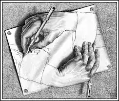
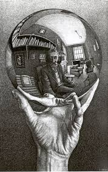

Artista 3D
- 
- 


Drawing Hands
A "Relatividade" é uma litografia de impressão do artista holandês Mc escher, foi impressa pela primeira vez em dezembro de 1953. Ela retrata um mundo em que não se aplicam as leis normais de gravidade. A estrutura arquitetônica parece ser o centro de uma comunidade idílica, com a maioria de seus habitantes vai casualmente sobre seu negócio comum, tais como o jantar. Há janelas e portas que levam ao parque e ambientes ao ar livre. Todas as figuras estão vestidas em trajes idênticos e têm cabeças em forma de bulbo, traços característicos, que podem ser encontrados em muitas outras obras de EscherMão com Esfera Refletora
Mão com Esfera Refletora , também conhecida como Autorretrato em Espelho Esférico , é uma litografia do artista holandês MC Escher , impressa pela primeira vez em janeiro de 1935. A peça retrata uma mão segurando uma esfera reflexiva. No reflexo, a maior parte da sala ao redor de Escher pode ser vista, e a mão segurando a esfera é revelada como sendo de Escher
Relativity
Drawing Hands é uma litografia do artista holandês MC Escher impressa pela primeira vez em janeiro de 1948. Ela retrata uma folha de papel, da qual duas mãos se erguem, no ato paradoxal de desenhar uma à outra para a existência. Este é um dos exemplos mais óbvios do uso comum de paradoxo por Escher
Three Spheres II
Three Spheres II é uma impressão litográfica do artista holandês M. C. Escher impressa pela primeira vez em abril de 1946. Como o título indica, ele descreve três esferas repousando sobre uma superfície plana.